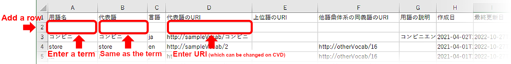

Importing files
The following three types of data can be input.
- Editing Vocabulary (編集用語彙)
(CSV format with UTF-8 BOM)
Data that is currently being edited regarding synonymous relationships and hierarchical relationships between terms. - Editing Vocabulary_meta (編集用語彙_meta)
(CSV format with UTF-8 BOM)
Vocabulary metafile. - Reference Vocabulary (参照用語彙)
(CSV format with UTF-8 BOM)
Data that organizes existing vocabulary information in tabular form. It cannot be edited.
This data is for reference only. Up to three files can be imported.
Click Files (ファイル) > Open (開く) in the top left corner of the menu to display the file import dialog box.

- * If any Reference Vocabulary (参照用語彙) file was imported in the past, the name and size of the imported file are displayed in the file import dialog box.
- * To import a new Reference Vocabulary (参照用語彙) file that has the same file name as a past imported file, it is necessary to click CLEAR first, and then reference the new file.
Exporting files
The following three types of data can be output.
- CSV (term list（用語一覧）)(CSV format with UTF-8 BOM): Data that is currently being edited regarding synonymous relationships and hierarchical relationships.
- CSV (basic vocabulary information（語彙基本情報）) (CSV format with UTF-8 BOM)
- RDF(n3, nquads, nt, trix, turtle, xml and jsonld formats): Controlled vocabulary to be released.
Click Files (ファイル) > Save (保存) > Editing Vocabulary (編集用語彙), Editing Vocabulary_meta (編集用語彙_meta) or Controlled Vocabulary (統制語彙) in the top left corner. When the File Output (ファイル出力) dialog box appears, enter any file name and click OK to download the file to your local environment.

How to select terms
The following two methods are used to select registered terms.
- Click a term on the Visualization (可視化) screen.
Selecting a term on the Visualization (可視化) screen highlights it by making its border line thicker. - Search in the search box.
Enter the term name in the search box to search. When the desired term is found, it will be displayed in the center of the screen. - Select a term from the pulldown in the Edit panel.
Select a term at random and press the Edit (編集) button on the upper right of the screen to display the edit panel. Select the desired term from the pull-down in the edit panel.
To cancel the selection, click the selected term, click the Cancel All Selections (選択全解除) button or the background of the Visualization (可視化) screen.
Edit panel (編集パネル)
Select a term and click the Edit (編集) button to open the Edit panel (編集パネル) . The Edit panel (編集パネル) allows you to edit synonyms, the representative word and hypernym of the selected term, change the URI of the representative word by editing its ID and edit the description of the term.
1
2
3
4
5
6
7
8
9
10
11
12
13

- ①Close (クローズ) button
- Clicking it closes the Edit panel (編集パネル).
- ②Display of the selected term
- This field displays the name of the term that is currently being edited. Select another term from the pull-down menu to change the selected term.
- ③Language selection
- This indicates which language is used for the term. Set Japanese or English (other languages are not supported).
- ④Synonyms (同義語)
- Terms in different word forms that have the same meaning. Multiple terms can be set. Clicking a synonym text box displays candidate synonyms chosen by AI. Select a desired term from them or enter one manually to set each synonym.
- ⑤The background of edited items is in pink, whereas the background of existing items is in blue.
- For the manual input, press the Enter key after entering a term to confirm the entry.
- ⑥Representative word (代表語)
- Set one term among the selected term and its synonyms to represent them.
- ⑦ID
- Assign a unique ID to the representative word.
- ⑧URI of representative word (代表語のURI)
- It is the unique URI assigned to each representative word. It can be changed by editing the ID.
- ⑨Hypernym (上位語)
- This word covers the meaning of the selected term. Only one hypernym can be set. Clicking the text box displays candidate hypernyms chosen by AI. Select a desired term from them or enter one manually to set the hypernym.
- ⑩Hyponym (下位語)
- This word has a more specific meaning than the selected term. Hyponyms cannot be edited on this screen. A hypernym-hyponym relationship can be changed by selecting a hypernym from the terms that are equivalent to hyponyms.
- ⑪Term description (用語の説明)
- This is a description of the term.
- ⑫URI of synonym in other vocabulary systems (他語彙体系の同義語のURI)
- The URI of a term that has a synonymous relationship with the selected term in a vocabulary that is different from the vocabulary that is currently being edited in the target field. It cannot be changed at the Edit panel. (Please see Adding and deleting synonyms in other vocabulary systems)
- ⑬Apply (反映) button
- After finishing the editing, click the Apply (反映) button to save the edited data.
Editing enabled by using relationship lines
Placing the mouse pointer over a registered term displays three points. These points can be used to draw relationship lines.
Hold down the mouse button over one of the displayed points and drag it to make a relationship line appear. Then, connect the line to another term. A dialog box will appear to allow you to set synonyms and hypernyms.
If you use relationship lines, you can set synonyms and broader terms without using the edit panel.

Start point of a relationship line with a synonym

Connecting a synonymous relationship line from the selected term to another term can establish a synonymous relationship between them.
Start point of a relationship line with a hypernym

Connecting a hierarchical relationship line from the selected term to another term can establish a hierarchical relationship between them.
Adding and deleting terms
CVD cannot be used to add new terms or delete registered terms.
To add or delete terms, export the vocabulary that is currently being edited into a CSV file, and then edit the CSV file.
Procedure for adding and deleting terms
- Export the vocabulary that is currently being edited into an Editing Vocabulary (編集用語彙) file (CSV （用語一覧）file).
For the procedure for exporting an Editing Vocabulary (編集用語彙) file, refer to Exporting files on this help page. - Edit the exported Editing Vocabulary (編集用語彙) file.
To add a term, add a row to the exported CSV file. (To delete a term, delete the row of the term that should be deleted.) When adding terms, setting the Terms (用語名) Column, the Representative word (代表語) Column and the URI of representative word (代表語のURI) Column can minimize data entry. (Those other than the Terms (用語名) Column can be changed on CVD.)  - Import the edited Editing Vocabulary (編集用語彙) file into CVD.
For the procedure for importing the file, refer to Importing files on this help page.
Adding and deleting synonyms in other vocabulary systems
CVD cannot be used to add or delete the URI of a new synonym in another vocabulary system to or from any term.
To add or delete synonyms in other vocabulary systems, export the vocabulary that is currently being edited into a CSV file, and then edit the CSV file.
Procedure for adding and deleting the URIs of synonyms in other vocabulary systems (他語彙体系の同義語のURI)
- Export the vocabulary that is currently being edited into an Editing Vocabulary (編集用語彙) file (CSV（用語一覧） file).
For the procedure for exporting an Editing Vocabulary (編集用語彙) file, refer to Exporting files on this help page. - Edit the exported Editing Vocabulary (編集用語彙) file.
To add a synonym in another vocabulary system to a term in the exported CSV file, enter the URI of the synonym in the “URI of synonym in other vocabulary systems (他語彙体系の同義語のURI)” Column. - Import the edited Editing Vocabulary (編集用語彙) file into CVD.
For the procedure for importing the file, refer to Importing files on this help page.
Changing the color of the border line of a term
The color of the border line of each term displayed on the Visualization (可視化) screen can be changed individually.
Use this function to divide terms into different groups or distinguish different statuses such as editing in progress on the display.
- Select a term to activate the Change Border Color (枠線色変更) button.
- Press the button, and then select a border color to change the border color of the selected term on the Visualization (可視化) screen.
Multiple items can be changed at once
Multiple terms can be selected by clicking them, while holding down the Shift key on the Visualization (可視化) screen.
Select multiple terms, click the Change Border Color (枠線色変更) button and select a border line color to apply the change to all of the selected terms.
About confirmation
The editing status of each term can be locked to prevent operation errors.
Select a term and click the Confirm (確定) button to lock the selected term so that it cannot be edited. The Confirm (確定) button will change to the Cancel Confirmation (確定解除) button.
Select a confirmed term and click the Cancel Confirmation (確定解除) button to return to the editable state.
Selecting a confirmation color on the menu allows you to change the background color of the confirmed term to the specified color.

CVD-supported browsers
The following WEB browsers are supported.
| Browser | Support status |
|---|---|
| Google Chrome | Supported |
| Microsoft Edge | Supported |
| Internet Explorer | Not supported |
| Firefox | Not supported |
| Other browsers | Not supported |